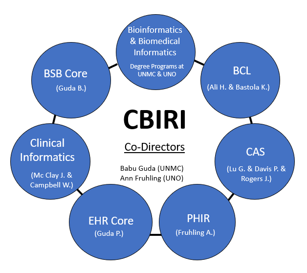

Vision of the Center
Under the co-direction of Babu Guda, PhD, professor in the UNMC Department of Genetics, Cell Biology and Anatomy and Ann Fruhling, PhD, professor of Interdisciplinary Informatics within UNO's College of Information Science & Technology, CBIRI’s vision is to be recognized as a national leader in providing biomedical informatics (BMI) expertise and resources to promote and advance basic, clinical, translational, and public health research.
Mission of the Center
To serve as a coordination and communication vehicle for biomedical informatics (BMI) educational and research activities, and resources. Build new collaborations pertinent to both academia and industry by horizontal integration of expertise, resources, and users under one umbrella organization to facilitate effective utilization of BMI resources and expertise in the realms of all types of health research.
Goals
- Strategically position the University of Nebraska to advance from a regional leader in biomedical informatics to a nationally recognized program by actively engaging faculty in developing and expanding unique expertise, growing faculty focused on biomedical informatics, and training students to accelerate biomedical discoveries.
- Develop and disseminate training and outreach activities, such as seminars, vendor-sponsored workshops, mini-symposiums and short non-credit courses related to biomedical informatics to enable faculty and students to collaborate with BMI experts.
- Develop a platform for sharing personnel and resources across sub-disciplines and campuses, including the acquisition and distribution of BMI data analysis software by leveraging collective bargaining and group licensing.
- Identify and develop research infrastructure that allows BMI to adapt to the rapidly changing needs of diverse disciplines.
- Increase the number and variety of services, contracts, and grants that will sustain and grow the Center in the long term. In particular, the expertise and collaborations within CBIRI will be leveraged at UNO to compete for a new COBRE grant focused on the gut microbiome.
Management Structure
The Center will be administered by two Co-Directors, a steering committee, an Internal Advisory Committee (IAC), and an External Advisory Committee (EAC). Policies and procedures will be developed by the steering committee, which will meet quarterly. Key strategic goals and plans will be developed through broadly based input from internal and external advisory committee members. The IAC and EAC are expected to meet on an annual basis with the steering committee members.
Research Labs
Guda Lab – Research in Computational Biology, Genomics, and Precision Medicine
Guda Lab – Research in Computational Biology, Genomics, and Precision Medicine
Dr. Guda has interdisciplinary training background in molecular biology, computer science and computational biology, with over 22 years of experience in bioinformatics research that includes analysis of a variety of high throughput data from genomics-based experiments. He published over 125 peer-reviewed research articles, with about half of them resulting from his own research work, which cover a wide range of topics related to genomics, bioinformatics, systems biology and Next-gen sequence data analysis. Currently, his laboratory works on research projects related to the development of novel computational methods and data analysis pipelines in cancer genomics, neuroinformatics, machine learning and precision medicine. Dr. Guda also established the Bioinformatics and Systems Biology (BSB) Core facility at the University of Nebraska Medical Center (UNMC) that currently supports over 250 independent investigators in the Midwest region. BSB core offers a broad range of bioinformatic services related to the analysis of next-generation sequencing (exome, RNAseq, ChIPseq, bisulfite methylation, microRNA and SNP arrays, and metagenomics data), proteomics and metabolomics data, protein sequence and structure analysis that include homology modeling, database searching, functional characterization of genes and gene products, and pathway and network analysis. Dr. Guda developed and taught several graduate courses in Bioinformatics and mentored dozens of undergraduate and graduate students, postdocs and junior faculty in the bioinformatics field. He served on numerous grant review panels of NSF, NIH, and DoD, and published about 125 peer-reviewed research articles that cover a wide range of topics related to computational biology, systems biology, next-gen sequence data analysis and cancer genomics.
Fruhling Lab – Research in Health and Consumer Informatics
Dr. Fruhling, Professor, is the founding Director of the School of Interdisciplinary Informatics at UNO and a Charles W. and Margre H. Durham Distinguished Professor of College of Information Science and Technology. The School offers four degrees: Cybersecurity, Bioinformatics, Biomedical Informatics, and IT Innovation. Since 2004, Dr. Fruhling has served as Director of the Public Health Informatics Research Laboratory, employing several FTEs and supporting many GAships and over 70 undergraduate, graduate, and doctoral students. She has over 100 publications and has been a PI/Co-PI on research projects totaling over $8.53M. Dr. Fruhling's research focuses on health informatics and evaluating and improving human-computer interaction efficiency and effectiveness in the healthcare and public health domains. Since 2002, she has been the PI of an emergency response system and bioterrorism surveillance system for public health laboratories called STATPack™, which has been deployed in over 65 health laboratories. Dr. Fruhling is a Co-PI on an NIH R01, ARHQ grant that focuses on optimizing the EHR for cardiac care and the PI for a UNO/UNMC collaborative grant sponsored by the Department of Transportation and awarded by UNL’s University Transportation Center that is conducting research and development to minimize the health impact to first responders in the case of a HAZMAT transportation incident using internet of things (IoT). In addition, Dr. Fruhling is a Co-PI for the Biomedical Informatics KCA that supports the UNMC NIH IDeA Center for Translational Research.
Services
CBIRI cores provides a broad range of services through different cores. Refer to the services page for each cores listed below for detailed service list.
-
Bioinformatics and Systems Biology Core
- Electronics Health Records Access Core
- Nebraska Biobank
- Research IT Office
- Public Health Informatics Research Lab
- Clinical Informatics
- Bioinformatics Computing Lab
- College of Arts and Sciences
Grants
- “Bioinformatics and Systems Biology Core (BSBC)” Nebraska Research Initiative (NRI) 07/01/12- Current PI: Guda
- "UNMC Eppley Cancer Center Support Grant" NIH/NCI, 5P30CA036727-32 08/01/16 - 07/31/26 Guda (Core-Lead), (PI: Cowan)
- "Great Plains IDeA-CTR" NIH/NIGMS, 5U54GM115458-03 09/01/16 – 06/30/26 Guda/McClay/Fruhling (BIBCE Core Directors), (PI: Rizzo)
- “INBRE-Nebraska Research Network in Functional Genomics” NIH/NIGMS, 5P20GM103427 01/01/14 – 04/30/25 Guda (Core-Lead), (PI: Sorgen)
- “Nebraska Center for Nanomedicine (COBRE-Phase III)” NIH/NIGMS, 1P30GM127200-01 06/01/18 – 05/31/23 Guda (Co-I), (PI: Oupicky)
- “Chronic HIV Infection and Aging in NeuroAIDS (CHAIN) Center” NIH/NIMH, 5P30MH062261-18 04/01/16 – 03/31/22 Guda (Co-I), (PI: Fox/Buch)
Contact
Ann L. Fruhling, PhD, MBA
Professor, School of Interdisciplinary Informatics
Charles W. and Margre H. Durham Distinguished Professor of Information Science and Technology
Director, Consortium for Public Health Informatics Research Lab
Co-Director, Nebraska University Center for Biomedical Informatics Research and Innovation
College of Information Science and Technology
University of Nebraska at Omaha
PKI 280A
(402)686-9001
afruhling@unomaha.edu

"Don't dream your life, live your dreams."